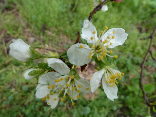
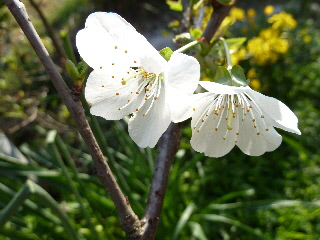
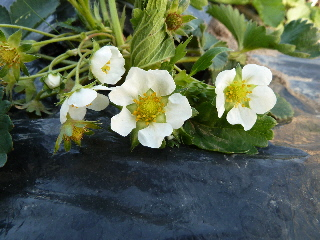
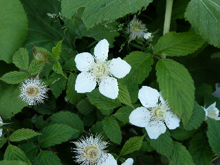
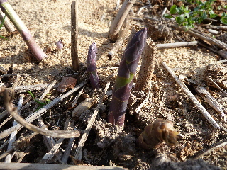
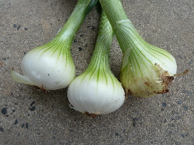
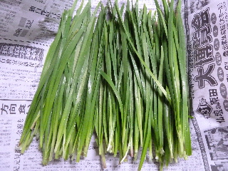
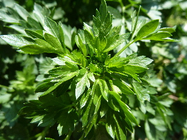
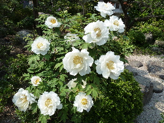
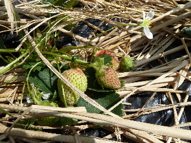

梨の花が咲いていました。
2013/04/07
まだ一度も実をつけたことない梨に花が咲いていました。
これ１種類１本しかないです。
なので、実をつけるのは難しいのかな？
ネットで検索してたら、違う品種のものを受粉するような事が書いてありました。
2013/04/07
まだ一度も実をつけたことない梨に花が咲いていました。
これ１種類１本しかないです。
なので、実をつけるのは難しいのかな？
ネットで検索してたら、違う品種のものを受粉するような事が書いてありました。
2013/04/07
小さくて薄い花ですね。
地味だ。

我が家のこの木は、今年は花の数も少ない気がする。
2013/04/13
食べないので関心がなかったですが、グミの花が沢山咲いていました。

ちょっと変わった格好ですよね。
もっと美味しければ食べるんだけどなー。
今ねっとで調べたら、茱萸はビタミンEが沢山含まれていて、体にいいそうです。
今年は何かに活用したいです。
【4月TOP】
【日記TOP】
【園芸TOP】
2013/04/13
何年か前に買ったサクランボの木ですが、今年初めて花が咲きました。

白いんですね。
ちょっとしか咲いていないので、実は期待できないかな。
来年沢山咲くといいな。
2013/04/13
りんごに小さい蕾が出来ていました。

小さくて赤い蕾が並んでいるんが可愛いです。
見てて、なんか和みました。
2013/04/13
露地物の苺が咲きだしました。

ゴールデンウィークには食べれるかな？

勝手に生えてるクサイチゴも花が咲いてました。
勝手に生えてるものなので、実が大きくならなかったりします。
美味しいんですが、ちゃんと育てようとは何故か思わないです。
2013/04/13
アスパラが地面からドンドン出てきます。

ゆでるだけても食べれるので、使いやすい食材ですよね。
2013/04/20
花が咲きました。


上と下ではリンゴの種類が違いますが、見た目は同じですね。
筆で受粉がちゃんと出来たかな？
2013/04/20
玉葱を少し収獲しました。

まだ少し小さいです。
甘くて美味しい新玉葱です。
2013/04/20
ニラが育っていたので、収穫しました。

木の下とかでも良く育っていいですね。
ちょっとした隙間に植えています。
2013/04/28
温かくなって急速に大きくなったパセリですが、もうすぐ花が咲きそうです。

でも花咲いたら終わっちゃうんだったっけ。
なので、今日は沢山収穫しました。
2013/04/28
ボタンの時期ですね。
今年はボタンを見に出かける予定がないので、家のボタンをしっかり見ます。

ボタンは派手ですね。
毎年咲いていますが、毎年「おー！派手だ！、立派だ！」って思います。
2013/04/28
苺が大きくなってきました。

赤みがちょっと入りましたね。
もう何日かで完熟です。
楽しみです。
過去の日記
畑仕事じゃないよ。